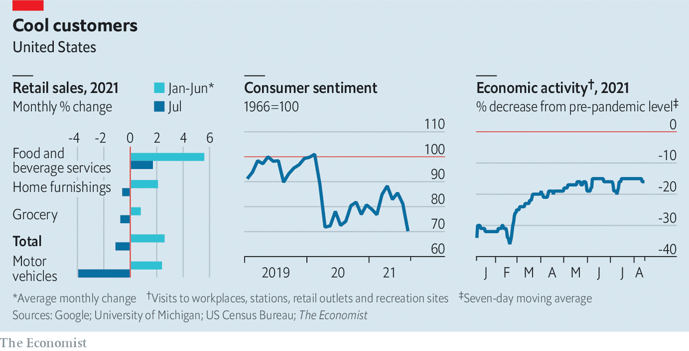

FLUSH with stimulus cash and a hoard of savings, consumers have powered America’s recovery. But the fervour is cooling. Figures released on August 17th showed that retail spending shrank by 1% in July compared with the previous month. Some of that could reflect disruption to the supply of cars. But caution about covid-19 may be playing a role too. Sentiment has fallen steeply, and mobility indicators have stalled.■
For more expert analysis of the biggest stories in economics, business and markets, sign up to Money Talks, our weekly newsletter.
This article appeared in the Finance & economics section of the print edition under the headline "American consumers become warier"